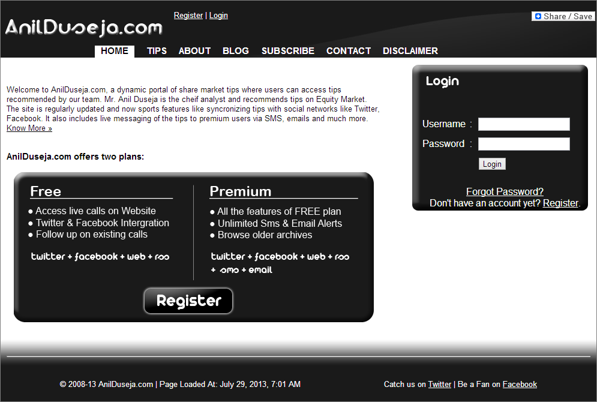

Technologies Used: PHP, MySQL, CSS, HTML, jQuery & more.
Link: AnilDuseja.com
About: AnilDuseja.com is a dynamic portal of share market tips where users can access tips recommended by our team. This was Ankit's first project ever and was an in-house project where Mr. Anil Duseja is the cheif analyst and recommended tips on National Stock Exchange Market. It sports features like syncronizing tips with social networks like Twitter, Facebook. It also includes live messaging of the tips to premium users via SMS, emails and much more.